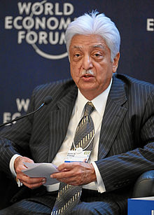

In 1945, Muhammed Hashim Premji incorporated Western Indian Vegetable
Products Ltd, based at Amalner, a small town in the Jalgaon district of
Maharashtra. It used to manufacture cooking oil under the brand name Sunflower
Vanaspati, and a laundry soap called 787, a byproduct of oil manufacture. In
1966, on the news of his father's death, the then 21-year-old Azim Premji
returned home from Stanford University, where he was studying engineering, to
take charge of Wipro.
The company, which was called Western Indian Vegetable
Products at the time, dealt in hydrogenated oil manufacturing but Azim Premji
later diversified the company to bakery fats, ethnic ingredient based
toiletries, hair care soaps, baby toiletries, lighting products, and hydraulic
cylinders.
In the 1980s, the young entrepreneur, recognising the importance of
the emerging IT field, took advantage of the vacuum left behind by the expulsion
of IBM from India, changed the company name to Wipro and entered the
high-technology sector by manufacturing minicomputers under technological
collaboration with an American company Sentinel Computer Corporation. Thereafter
Premji made a focused shift from soaps to softw
Premji was born in Bombay,India in a Nizari Ismaili Shia Muslim family with
origins from Kutch in Gujarat. His father was a noted businessman and was known
as Rice King of Burma. After partition, when Jinnah invited his father Muhammed
Hashem Premji to come to Pakistan, he turned down the request and chose to
remain in India.
Premji has a Bachelor of Science in Electrical Engineering degree (equivalent to
a Bachelor of Engineering degree) from Stanford University, USA. He is married
to Yasmeen. The couple have two children, Rishad and Tariq. Rishad is currently
the Chief Strategy Officer of IT Business, Wipro.
Premji has been recognised by Business Week as one of the Greatest Entrepreneurs
for being responsible for Wipro emerging as one of the world's fastest growing
companies.
In 2000, he was conferred an honorary doctorate by the Manipal Academy of Higher
Education. In 2006, Azim Premji was awarded Lakshya Business Visionary by
National Institute of Industrial Engineering, Mumbai. In 2009, he was awarded an
honorary doctorate from Wesleyan University in Middletown, Connecticut for his
outstanding philanthropic work. In 2015, Mysore University conferred an honorary
doctorate on him.
In 2005, the Government of India honoured him with the title of Padma Bhushan
for his outstanding work in trade and commerce.
In 2011, he has been awarded Padma Vibhushan, the second highest civilian award
by the Government of India.
In 2013, he received the ET Lifetime Achievement Award.
In 2015, University of Mysore conferred the honorary doctorate to Azim Premji.
Listen to the citation read out at the 95th convocation held on 17 April 2015
Dr.Azim Premji-University of Mysore convocation-2015